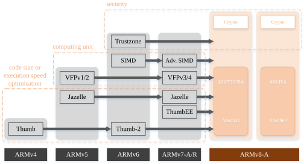
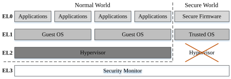
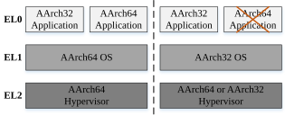
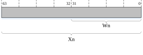
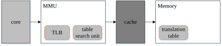
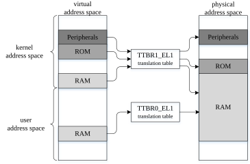
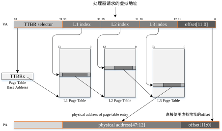

为了更深入地剖析kernel，了解ARMv8体系架构是非常必要的。本文尽量全面地概述ARMv8体系架构涉及的基础知识。Linux内核的绝大部分代码是与体系架构无关的「independent」，但是还存在大量的代码「spinlock、cache管理」都是与体系架构相关的「dependent」，这些代码不仅会在启动时被运行而且在系统正常运行期间也会被经常调用执行。不仅仅Linux内核牵涉了很多的体系架构知识，而且编译器（比如LLVM「Low Level Virtual Machine」）以及与内核紧密相关的领域（比如虚拟机）也都涉及了大量体系架构方面的知识，为了使系统或软件最大地利用硬件的特点和性能，学习了解体系架构的知识就显得格外重要。尽管ARMv8设备已被广泛地应用到各个领域，但是关于ARMv8体系架构的书籍不是太多，还比较零散，因此我希望本文能够尽量全面的介绍ARMv8体系架构方面的知识点，使我们在研究Linux内核代码不会因为体系架构知识短缺而困惑。
- Target Platform: Rock960c
- ARCH:arm64
- Linux Kernel:linux-4.19.27
ARMv8简介

图1 ARM体系架构的演进

图2 ARMv8异常模型「exception model」

图3 执行环境的对比

图4 AArch64寄存器的32bit和64bit用法
ARMv8寄存器
图5 AArch64 SPSR寄存器
exception handling「异常处理机制」
cache「缓存器」
memory order「内存访问秩序」
MMU「内存管理单元」
MMU「Memory Management Unit，内存管理单元」的主要功能就是将CPU核心给出的虚拟地址「virtual address」转换成物理地址「physical address」。除此之外，它还具备其他功能，比如访问权限和TLB「Translation Lookaside Buffer，地址转译后援缓冲器」的设置。正是MMU的这些功能才确保各个进程能够在自己独有的虚拟地址空间中运行。如图17所示，给出一个PIPT 「physical indexes physical tags」cache的例子，MMU输出的物理地址被用作检索cacheline的index和tag。

图17 MMU的一种使用场景
MMU的存在使应用程序能够在不顾虑其他应用程序的情况下灵活使用虚拟地址访问代码数据，即使物理内存比较零散，它也能通过映射「mapping」呈现一个连续的虚拟内存，并且虚拟地址空间与物理地址空间是完全分开的。图18给出了虚拟地址空间与物理地址空间之间的纽带——转换表「translation table」。

图18 通过转换表「translation table」完成地址的转换
转换虚拟地址成物理地址的原理

图19 虚拟地址转换成物理地址的过程